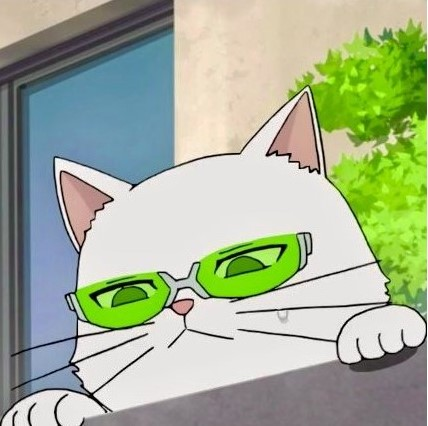
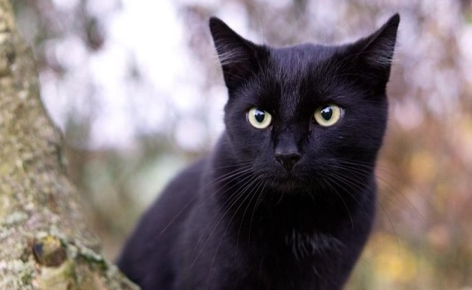

Caracteristicas de los gatos
Estamos ante un mamífero cuadrúpedo, con cola, aunque el gato de Manx carece de ella, garras retráctiles y pelo que recubre todo su cuerpo. Posee unos 230 huesos que le permiten una gran flexibilidad y elasticidad. Destacan sus bigotes, que son pelos modificados con función sensitiva.
Su coloración es muy variable y puede ser monocolor, bicolor o tricolor y presentar diferentes patrones atigrados y longitudes. Aunque hay variaciones entre ejemplares y razas más grandes o más pequeñas, podemos establecer un peso medio de entre 3 y 5 kg.
¿Porqué los gatos son tan geniales?
Lo primero que destaco es su apariencia, entre el top de animales más lindos y tiernos el gato entra en esa categoria,sus ojos de forma ovalada son extremadamente lindos y más cuando su pupila se dilata, su mirada se transforma en una de las más conmovedoras y encantadoras, como ejemplo de esto es en la pelicula de el gato con botas, ¿quien no le dio ternura esaescena?, ¿como es posible que incluso en forma animada siga provocando tal ternura?, merecido el éxito de la pelicula. También en tiktok y videos de youtube que llegan a millones de reproducciones y likes por estos felinos, el camino del éxito es tener un gato osea cuanto dinero habran ganado por monetizar los videos. Pero no es esto lo más importante si no el amor que entregan sus ronroneos los que representan confianza,felicidad o bienestar y se produce cuando se sienten seguros y protegidos. También esta la acción de "amasar" para acomodarse o marcar territorio.
Hablemos de lo excelente casadores que son lo cual los convierte en Heroes, quien no ha temido por una cucaracha pero hay llega el gato a atraparla, una vez limpiando la casa detrás de una caja se encontraba una araña, al notarla y por el movimiento decidio escapar, ya sin esperanza de encontrarla y con la angustia de tener que volver a encontrarmela y que me picara, note a mi gata persiguiendo algo, en ese entonces noté que era la araña, gracias a ella pude matar al aracnido, desde ese entonces es uno de los seres que más respeto. Los gatos son una gran compañia a pesar de no poder comunicarnos con ellos las conexiones que se pueden llegar a formar son increibles, y el cariño que le tomamos es indispensable. Por ende las personas que les disgustan u odian los gatos es mejor evitarlas, las razones para llegar a odiar a este animal son nulas, los rumores y mala fama que les hacen a los gatos negros son patrañas, el problema siempre ha sido la gente, no los gatos, los gatosgod, incluso las personas con alergia a este animal los siguen adorando.
 Creador